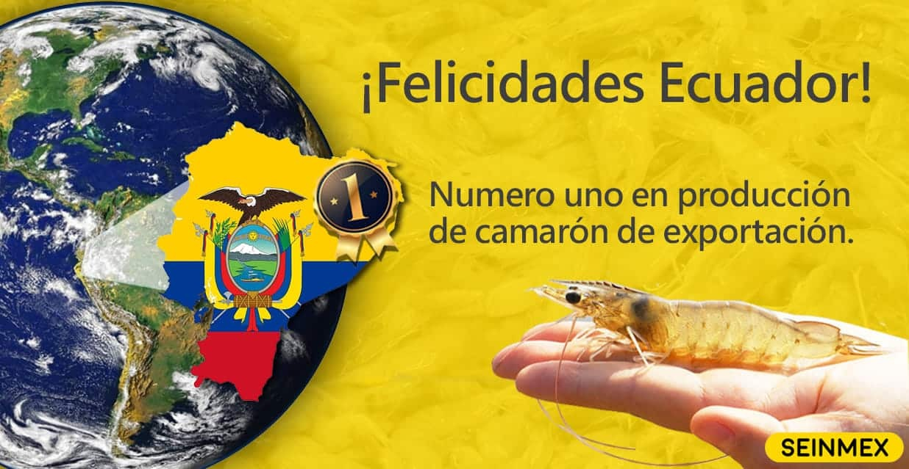

Puerto de Corío podría entrar en los Planes de Estados Unidos
25/09/2024
Todos en Perú están completamente felices por la construcción del Puerto Chancay, pero hay un país que no lo está del todo: ECUADOR.
Ecuador es un país con una economía diversificada, aunque sus exportaciones están dominadas por productos agrícolas y recursos naturales
Ecuador ha trabajado en diversificar sus mercados de exportación, con destinos clave en América del Norte, Europa y Asia. China se ha convertido en un socio comercial cada vez más importante, especialmente en el sector de productos agrícolas. El país también exporta productos manufacturados, aunque en menor escala, y ha estado buscando aumentar su presencia en el mercado de productos con valor agregado. Las exportaciones son cruciales para la economía ecuatoriana, no solo generando ingresos en divisas, sino también proporcionando empleo en diversas industrias.
Pero, ¿y si el Puerto de Chancay representa un gran riesgo para las exportaciones ecuatorianas?
Las compañías logísticas de Ecuador se encuentran evaluando las ventajas en términos de tiempo y costo de utilizar el puerto de Chancay.
Las principales preguntas que se hacen son:
- ¿Por qué un exportador de banano o camarón consideraría enviar su carga a través de un puerto en Perú cuando tiene terminales ecuatorianas más cercanas? - ¿Es viable mover la carga desde las áreas de producción hasta el norte de Perú, y cuáles son las oportunidades o desventajas de hacerlo?
El informe que te presentaré fue desarrollado por la empresa Transporte Sánchez Polo, especializada en transporte de carga terrestre y logística interregional entre Colombia, Ecuador, Perú, Venezuela, y que también incluye Chile, Bolivia y Brasil.
Tras el análisis, Felipe Tobar, gerente general desde el 2011 de la empresa mencionada, afirma que la multimodalidad de una importación o exportación entre China y Ecuador a través del megapuerto de Chancay es viable. Pero, ¿por qué afirma esto? ¿Acaso no es mejor usar los puertos ecuatorianos? ¡Veamos por qué lo dice!
El estudio de la operación terrestre incluyó las conexiones del país con el nuevo puerto peruano, considerando que la distancia entre fronteras y los centros de producción de carga exportable varía entre 1,200 y 1,500 kilómetros. Esta distancia es común en el transporte de mercancías y ya se recorre en rutas internacionales, como Bogotá-Cuenca o Bogotá-Guayaquil, que también rondan los 1,500 kilómetros, y Cali-Cuenca o Cali-Guayaquil, con cerca de 1,200 kilómetros. Aunque los tiempos de transporte son favorables, aún no se ha finalizado el análisis de los costos logísticos para viajes más largos de la carga, sumado al impacto de los crecientes costos del transporte marítimo en la actualidad.
Antes de seguir con todos los argumentos, debes saber primero que el Puerto de Chancay es un megaproyecto de infraestructura ubicado en la región de Lima, Perú, a unos 80 kilómetros al norte de la ciudad de Lima. Concebido como el primer puerto privado multipropósito del país, este terminal portuario tiene como objetivo convertirse en un hub logístico estratégico para la región, facilitando el comercio entre América Latina y Asia, especialmente China. La inversión total en el Puerto de Chancay asciende a más de 3,600 millones de dólares, siendo financiada por la empresa china Cosco Shipping Ports, una de las mayores navieras del mundo, que posee una participación mayoritaria en el proyecto.
Por todo esto, según Felipe Tobar, todos los involucrados en la cadena de comercio exterior deben considerar a Chancay "como una oportunidad" en un contexto tan cambiante como el del transporte marítimo. “Si mañana existe alguna otra interrupción del comercio internacional o en las rutas marítimas, vale que tengas tu plan B, tu plan C y así hasta que sea necesario”, comenta.
Perú tiene una visión clara respecto a las inversiones estratégicas que está haciendo para el futuro en términos logísticos, pero especialmente en cuanto a la conectividad con todos los países con los que mantiene diversos acuerdos comerciales. En este caso, Chancay es una inversión de la naviera Cosco que contribuirá a conectar con China en un menor tiempo que el actual. Esto se traduce en un recorrido más corto, un plazo de aproximadamente 10 a 15 días, lo que podría implicar un costo reducido.
¡Y esto en Ecuador tendrá un gran impacto!
El efecto en Ecuador estará en las mayores opciones que tendrán las exportaciones peruanas hacia Asia, comparado con el tiempo y costo que enfrentarían las exportaciones ecuatorianas, teniendo en cuenta que su ruta habitual pasa primero por otros puertos de la región antes de llegar a México.
Lo que se sabe en esta etapa inicial es que el tiempo de tránsito se acorta significativamente, reduciendo el lead time en al menos 10 días. Actualmente, es de alrededor de 25 días, y hay una disminución considerable.
Pero, ¿es posible que Ecuador utilice el Puerto de Chancay?
¡Por supuesto que sí!


 Este sitio utiliza cookies para mejorar la experiencia del usuario.
Este sitio utiliza cookies para mejorar la experiencia del usuario.